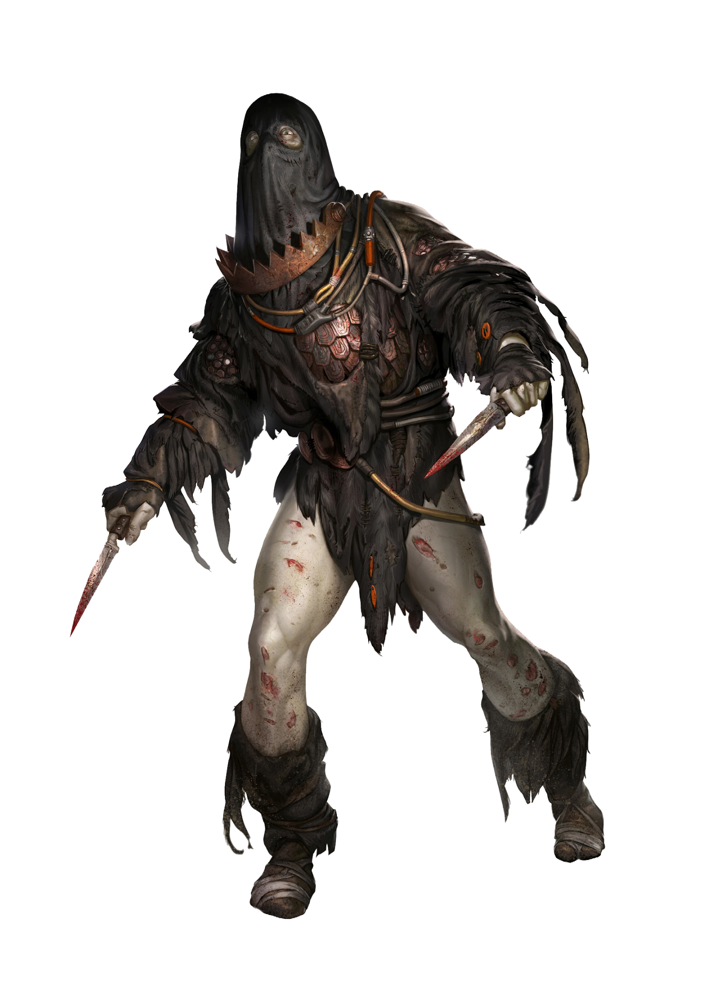

This is not a playable Clan in Degenesis: Alpha & Omega.
CLAN DOSSIER
Usudi
A whisper that shatters the soul.
KatharSys p. 231

CARPATHIANS
The Whispering
The children hear it long before the adults do: a faraway whisper, almost indiscernible from the wind howling through the valleys and chasms of the Balkhan mountains. It will rise, oscillating between the mountain flanks and gathering strength, a massive pushing and screaming that will come over the people like a conflagration, robbing them of their souls and minds, leaving behind nothing but empty husks in which fear and confusion turn into something bestial.
SONIC TRAPS
Cascades of Sound
The Carpathians are cursed. Here the songs of the Mokoschs and the wave crests raised by the Usud become stuck. They compress the air that people breathe, hanging in the chasms and canyons for days. Heavy rain changes the mountain’s reflection and can lead to acoustic dam failures: the stored waves discharge like cascades of sound into the surrounding valleys before they can be absorbed and deflected into the earth by the mountain.
Children hear these outbursts. The Clans rely on their youngest ones, reacting with fear to a happy “I hear the whispering!” They flee into caves, blocking their ears with beeswax, or throw themselves to the floor, huddling close together and covering themselves with furs. They hum children’s songs or scream against the oncoming noise.
SOULLESS
Remnants of a Former Life
Not all of them escape. Their consciousness shatters and is swept along, only a few embers still glowing. However, they are buried under something ancient and strange that grows and shoots through the nerve cords like quicksilver. Usud’s seed has sprouted. The creature still fights with its old self, thrashing and twitching uncontrollably. In the first days of their birth, the Usudis are as helpless as a Gendo with broken legs. They scream and lash out at anyone who approaches. They would pull even their own children close and press them to their bodies until they stop struggling and all life has been crushed out of them.
Voivodules watch the dangerous canyons and kill every soulless Usudi they can find. So far, the evil is still minor. But the Carpathians are vast, and the Voivodules have to flee from the sonic cascades, too. Somewhere out there, an Usudi they have missed is writhing. Maddened with hunger, he grabs for birds or attacks deer. Others of his kind find, kick, and hit him. If he is strong enough, he may stay. Now the original mechanisms take hold: a mindless pack spirit keeps the Usudis together. Fear and hatred direct them towards merchants or passing Clans. The only thing that remains of their former selves is shame. They hide behind masks, encumber themselves with iron and cables, draping themselves with everything that is connected to their fading past. However, these anchors of their being will never take root.
SACRIFICE
The Valley of Rebirth
An Usudi never forgets the valley of his rebirth. He returns here with his pack, listening to the whispers of the flowing stream of sound, feeling it permeating him and carrying away the pain. This is a good place. The Usudi doesn’t understand the concept of a god, but he feels something akin to it. He feels greatness and sublimity: beyond the valley, the absence of these feelings cause bleeding wounds that won’t heal. He wants to go back, but he needs something to sacrifice to this place. He wants to give thanks, to be worthy. Another soul would be a gift that the mountains would accept. He gathers the other Usudis, calming them with a soft hum. His eyelids twitch, the anger wants out, but the desire for the valley of his birth rubs against his anger. Humming, he attracts his Usudi siblings, is the Pied Piper for a day, humming, humming. Once he has discovered a Clan, the hunt begins. The Usudis attack, trying to smash the Clan and find redemption in their pain. But the beater stops the pack. He needs the strangers in the valley.
No one can tell when there will be a sonic cascade. The cloud formations matter, as do the frequencies that the Mokoschs intone. Sometimes it takes days before there is even an audible whisper.
The Usudis could not bear to wait that long.